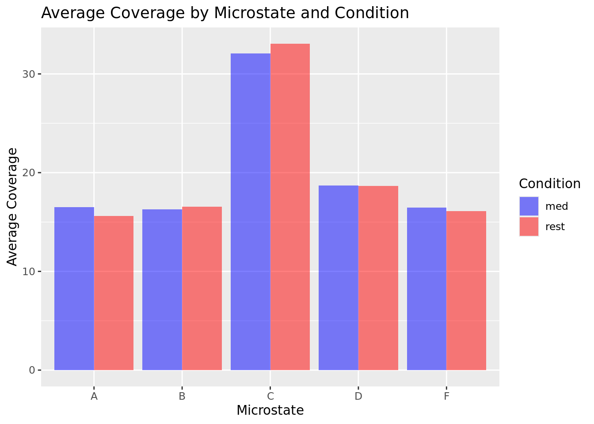

eegAnalysis
nyc surveys:

Correlation Matrix for Meditation:
Correlation Matrix for Rest:
Correlation Coefficients for Meditation:
A B C D F
past_med 0.1388497 -0.17612731 0.01955146 -0.003521553 0.004039637
positive_med 0.1360529 -0.20523853 -0.18747738 0.282932846 0.206451106
future_med 0.2322761 -0.28401333 -0.05326201 0.174425877 0.009822581
negative_med 0.3176249 -0.01675787 -0.04398143 -0.182562961 -0.003496943
friends_med -0.1050891 0.14118961 0.10682603 -0.345505773 0.059079056Correlation Coefficients for Rest:
A B C D F
past_med -0.54472642 0.22158059 0.41947020 -0.48286022 -0.08559348
positive_med -0.09441204 0.09027758 -0.02716272 -0.14864081 0.21514012
future_med 0.25307819 -0.18895024 -0.24153359 0.12280250 0.31309669
negative_med 0.01734464 0.01984304 0.06435006 -0.05723016 -0.10360975
friends_med -0.16948513 0.17583427 -0.02086351 -0.04408263 0.08495973P-values for Meditation:
mednyc_col medcoverage_col correlation_coefficient p_value
cor past_med A 0.138849728 0.6359314
cor1 past_med B -0.176127307 0.5469707
cor2 past_med C 0.019551460 0.9471073
cor3 past_med D -0.003521553 0.9904672
cor4 past_med F 0.004039637 0.9890649
cor5 positive_med A 0.136052916 0.6428137
cor6 positive_med B -0.205238526 0.4815045
cor7 positive_med C -0.187477378 0.5209996
cor8 positive_med D 0.282932846 0.3270060
cor9 positive_med F 0.206451106 0.4788610
cor10 future_med A 0.232276064 0.4242390
cor11 future_med B -0.284013327 0.3250820
cor12 future_med C -0.053262009 0.8564975
cor13 future_med D 0.174425877 0.5509111
cor14 future_med F 0.009822581 0.9734142
cor15 negative_med A 0.317624869 0.2684622
cor16 negative_med B -0.016757874 0.9546571
cor17 negative_med C -0.043981428 0.8813239
cor18 negative_med D -0.182562961 0.5321766
cor19 negative_med F -0.003496943 0.9905339
cor20 friends_med A -0.105089069 0.7206879
cor21 friends_med B 0.141189615 0.6301943
cor22 friends_med C 0.106826034 0.7162440
cor23 friends_med D -0.345505773 0.2263018
cor24 friends_med F 0.059079056 0.8409976P-values for Rest:
restnyc_col restcoverage_col correlation_coefficient p_value
cor past_rest A -0.54472642 0.04398711
cor1 past_rest B 0.22158059 0.44646571
cor2 past_rest C 0.41947020 0.13541971
cor3 past_rest D -0.48286022 0.08030632
cor4 past_rest F -0.08559348 0.77110023
cor5 positive_rest A -0.09441204 0.74818016
cor6 positive_rest B 0.09027758 0.75890307
cor7 positive_rest C -0.02716272 0.92656001
cor8 positive_rest D -0.14864081 0.61205484
cor9 positive_rest F 0.21514012 0.46012153
cor10 future_rest A 0.25307819 0.38267125
cor11 future_rest B -0.18895024 0.51767042
cor12 future_rest C -0.24153359 0.40546506
cor13 future_rest D 0.12280250 0.67577555
cor14 future_rest F 0.31309669 0.27572246
cor15 negative_rest A 0.01734464 0.95307105
cor16 negative_rest B 0.01984304 0.94631950
cor17 negative_rest C 0.06435006 0.82699865
cor18 negative_rest D -0.05723016 0.84591856
cor19 negative_rest F -0.10360975 0.72447917
cor20 friends_rest A -0.16948513 0.56242196
cor21 friends_rest B 0.17583427 0.54764845
cor22 friends_rest C -0.02086351 0.94356278
cor23 friends_rest D -0.04408263 0.88105253
cor24 friends_rest F 0.08495973 0.77275434